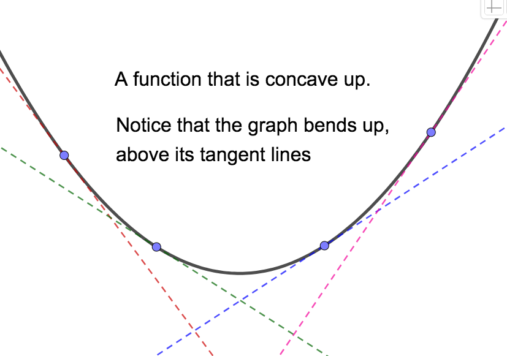
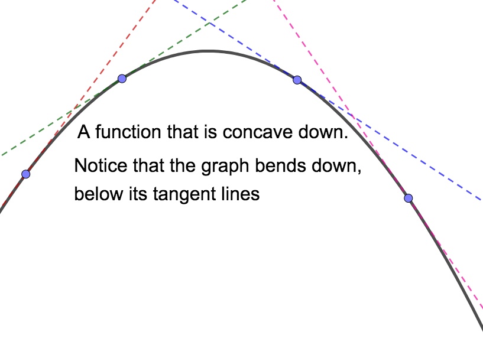
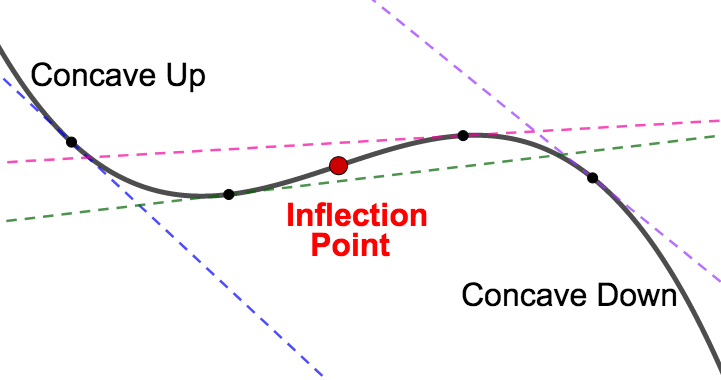
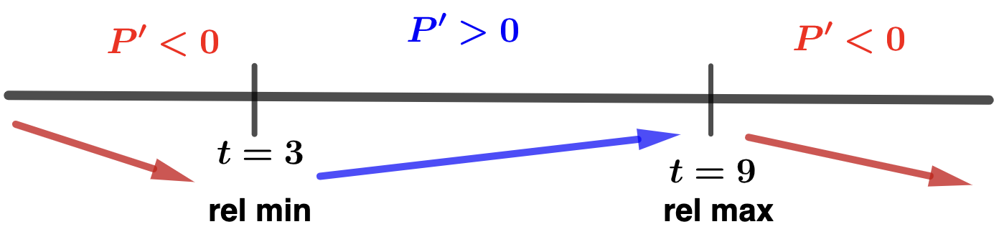
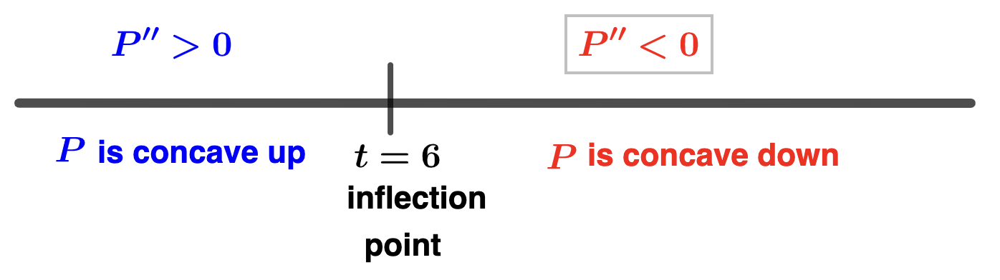
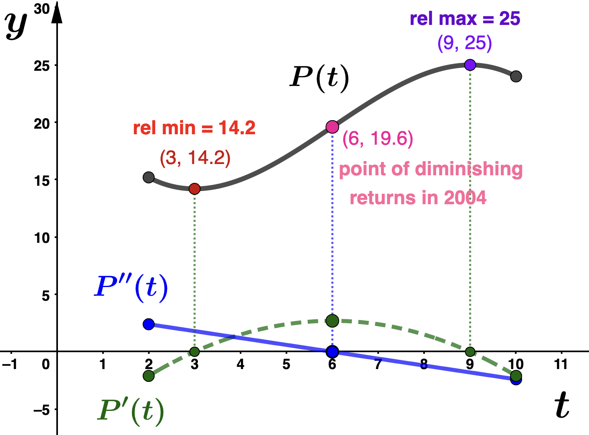

Section 3.8 The Second Derivative
If a function \(f\) has a first derivative, \(f'\text{,}\) then we may ask if \(f'\) is differentiable. If so, we call the derivative of \(f'\) the second derivative of \(f\) and denote it by \(f''\) or \(\dfrac{d^2f}{dx^2}\text{.}\) Of course, we can continue to check the differentiability of successive derivatives. These successive derivatives are called higher order derivatives of \(f\text{.}\) The notation for these higher order derivatives is given below. Notice that beyond order three, the "prime" notation changes and the order of the derivative is indicated by the number in parenthesis.
- First derivative: \(f'(x) = \dfrac{df}{dx}\)
- Second derivative: \(f''(x) = \dfrac{d^2f}{dx^2}\)
- Third Derivative: \(f'''(x) = \dfrac{d^3f}{dx^3}\)
- Fourth Derivative: \(f^{(4)}(x) = \dfrac{d^4f}{dx^4}\)
- Fifth Derivative: \(f^{(5)}(x) = \dfrac{d^5f}{dx^5}\)
For each derivative, we can use the power rule:
- \(\displaystyle f'(x) = \dfrac{df}{dx} = 24x^2 - 18x + 6 \)
- \(\displaystyle f''(x) = \dfrac{d^2f}{dx^2} = 48x - 18 \)
- \(\displaystyle f'''(x) = \dfrac{d^3f}{dx^3} = 48\)
- \(\displaystyle f^{(4)}(x) = \dfrac{d^4f}{dx^4} = 0\)
\begin{equation*}
f^{(n)}(x) = \dfrac{d^nf}{dx^n} = 0
\end{equation*}
for all \(n \geq 4\text{.}\)
One application of the second derivative is that \(f''(x)\) will give the instantaneous rate of change of \(f'\text{.}\) This has geometric consequences. Concavity is related to the rate of change of a function's derivative which can be found by looking at the sign of the second derivative. A function \(f\) is concave up where the first derivative, \(f'\text{,}\) is increasing (that is, where \(f'' > 0\)), and concave down where the first derivative, \(f'\text{,}\) is decreasing (that is, where \(f'' < 0\)). A point where concavity changes is called an inflection point. Geometrically, a function is concave up on intervals where the graph "bends up", or is above its tangent lines. The function is concave down on intervals where the graph "bends down", or is below its tangent lines.


Notice that in the picture on the left, the slopes of tangent lines get larger from left to right. In other words, the deriviate increases, which means the second derivative is positive. In the picture on the right, the slopes of tangent lines get smaller from left to right. In other words, the deriviate decreases, which means the second derivative is negative. Again, an inflection point is a point where concavity changes. That is, a point about which \(f''\) changes sign.

Fact 3.8.2.
If \(x=c\) corresponds to an inflection point for the function \(f\text{,}\) then either \(f''(c) = 0\) or \(f''\) is NOT DEFINED at \(x=c\text{.}\)We can use a sign chart for the second derivative to find inflection points in a similar way that we used a sign chart for the first derivative to find relative extreme values. We find places where the second derivative is zero, put that value on a number line, and check the sign of the second derivative on either side. If the sign changes (that is, if concavity changes) from one side to the other, then we have an inflection point.
This information is summarized in the Concavity Test: Suppose \(f\) is such that \(f'\) and \(f''\) exist for all \(x\) in the interval \((a,b)\text{.}\)
- If \(f''(x) > 0\) on \((a,b)\text{,}\) then \(f\) is concave up on \((a,b)\text{.}\)
- If \(f''(x) < 0\) on \((a,b)\text{,}\) then \(f\) is concave down on \((a,b)\)
Furthermore, if \(x=c\) is an inflection point of \(f\text{,}\) then either \(f''(c)=0\) or \(f''(c)\) does not exist.
Concavity and inflection points are related to the law of diminishing returns in economics. This law states that in all productive processes, adding more of one factor of production will at some point yield lower incremental per-unit returns. A point of diminishing returns refers to a point at which the optimal level of capacity is reached, where incremental increases in the input result in smaller increases in output. Mathematically, a point of diminishing returns is an inflection point through which the function increases and its derivative changes from increasing to decreasing (or equivalently, where the second derivative changes from positive to netagive).
Example 3.8.3.
\begin{equation*}
P(t) = -.1t^3 + 1.8t^2 - 8.1t + 25
\end{equation*}
where \(t\) is the number of years since 1998, valid for \(2 \leq t \leq 10\text{.}\) Take a minute to identify the input and output variables and write a sentnece to interpret each. - Write the domain of \(P(t)\) in iterval notation. Indicate the corresponding years for which the profit model is valid. Solution.Since \(P\) is valid for \(2 \leq t \leq 10\text{,}\) in interval notation this is expressed as dom(\(P\))\(= [2,10]\text{.}\) Also, since \(t\) is the number of years since 1998, the model is valid from 2000 through 2008.
- Find the critical numbers for \(P(t)\) and indicate the year to which they correspond. Solution.First, the marginal profit function is \(P'(t) = -.3t^2 + 3.6t - 8.1\text{.}\) Now we solve the following for \(t\text{:}\)\begin{align*} P'(t) \amp = 0\\ -.3t^2 + 3.6t - 8.1 \amp = 0 \quad \textrm{(multiply both sides by 10)} \\ -3t^2 + 36t - 81 \amp = 0 \\ -3(t^2 - 12t + 27) \amp = 0\\ -3(t-3)(t-9) \amp = 0 \end{align*}and we find 2 criical numbers: \(t=3\text{,}\) which corresponds the year 2001 and \(t=9\text{,}\) which corresonds the year 2007.
- Make and interpret a sign chart for the marginal profit function. Solution.
- In the interval \([2, 3)\) we can test with \(t = 2.5\text{:}\)\begin{equation*} P'(2.5) = -3(2.5-3)(2.5-9) < 0 \end{equation*}
- In the interval \((3,9)\) we can test with \(t = 4\text{:}\)\begin{equation*} P'(4) = -3(4-3)(4-9) > 0 \end{equation*}
- In the interval \((9, 10]\) we can test with \(t = 9.5\text{:}\)\begin{equation*} P'(9.5) = -3(9.5-3)(9.5-9) < 0 \end{equation*}
From the sign chart we can see that:- Pendanct Publishing's profit decreased from 2000 (\(t=2\)) to 2001 (\(t=3\)) and then again from 2007 (\(t=9\)) to 2008 (\(t=10\)).
- Pendanct Publishing's profit increased from 2001 (\(t=3\)) to 2007 (\(t=9\)).
- Since \(P(3) = 14.2\text{,}\) Pendant Publishing had relaive minimum profit of $14,200,000 in 2001.
- Since \(P(9) = 25\text{,}\) Pendant Publishing had a relaive maximum profit of $25,000,000 in 2007.
- Find any inflection ponts for \(P(t)\) by making and interpreting a sign chart for \(P''(t)\text{.}\) If you do find an inflection point, determine if it corresponds to a point of diminishing returns. Solution.To find candidates for inflection points, we solve \(P''(t)=0\)\begin{align*} P''(t) \amp = 0\\ -.6t + 3.6 \amp = 0 \quad \textrm{(multiply both sides by 10)} \\ -6t + 36\amp = 0 \\ -6(t-6) \amp = 0 \end{align*}and we see that \(t=6\) may give an inflection point. Let's make a sign chart for the second derivative.
- In the interval \([2, 6)\) we can test with \(t = 3\text{:}\)\begin{equation*} P''(3) = -6(3-6) > 0 \end{equation*}
- In the interval \((6,10]\) we can test with \(t = 7\text{:}\)\begin{equation*} P''(7) = -6(7-6) < 0 \end{equation*}
Since the sign of \(P''\) changes about \(t=6\text{,}\) we can conclude that the point \((6,P(6)) = (6,19.6)\) is an inflection point. Comparing the sign charts for \(P'\) and \(P''\) we see that- \(P\) is deceasing at an increasing rate from \(t=2\) to \(t=3\)
- \(P\) is increasing at an increasing rate from \(t=3\) to \(t=6\)
- \(P\) is increasing at a decreasing rate from \(t=6\) to \(t=9\)
- \(P\) is decreasing at a decreasing rate from \(t=9\) to \(t=10\)
- Graphical exploration: Graph \(P\text{,}\) \(P'\text{,}\) \(P''\) labeling all relative extreme values and inflections points. Make sure you understand how the graphical data is related to your work above. Solution.
The second derivative can also be used to help us identify relative extreme values of function. This process is called the The Second Derivative Test and will be our primary application of the second derivative.
The Second Derivative Test
Suppose \(x=c\) is a critical number of the function \(f\) and \(c\) is in the domain of \(f''\text{.}\) Then we can use the second derivative to determine if \(f(c)\) is a relative maximum or a relative minimum value of \(f\) as follows:
- If \(f''(c) < 0\) then \(f(c)\) is a relative maximum value of \(f\text{.}\)
- If \(f''(c) < 0\) then \(f(c)\) is a relative minimum value of \(f\text{.}\)
If \(f''(c) = 0\) then no conclusion can be made. In this case, you need to use the first derivative test to determine if \(f(c)\) is a relative extreme value.
Example 3.8.4.
\begin{equation*}
L(t) = \dfrac{1}{3}t^3 -10t^2 + 91t-165
\end{equation*}
in millions of listeners, where \(t\) the number of years since 2008. Use the second derivative test to determine the relative extreme values for \(L(t)\) and when they occurred. Write sentences to interpret your answers. Round function values to two decimal places. Solution.We begin by finding the critical numbers for \(L(t)\text{.}\) We solve
\begin{align*}
L'(t) \amp = 0 \\
t^2 - 20t + 91 \amp =0 \\
(t-7)(t-13) \amp = 0
\end{align*}
and we find two critical numbers: \(t=7\) and \(t=13\text{.}\) Next, notice that
\begin{equation*}
L''(t) = 2t -20.
\end{equation*}
Evaluating \(L''(t)\) at each critical value we find - \(L''(7) = -6 < 0\text{,}\) and
- \(\displaystyle L''(13) = 6 > 0\)
- WKRP in Cincinnati had a relative maximum annual listernship in 2015 (\(t=7\)). Since \(L(7) = 96.33\text{,}\) the relative maximum number of annual listeners was 96,330,000.
- WKRP in Cincinnati had a relative minimum annual listernship in 2021 (\(t=13\)). Since \(L(13) = 60.33\text{,}\) the relative minimum number of annual listeners was 60,330,000.